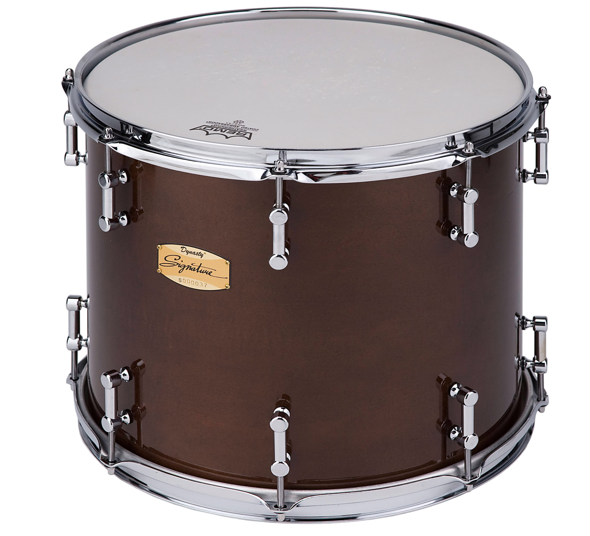

---------------------Carter Beauford---------------------------------------------------------------Buddy Rich-------------------------------------------------------------------Ginger Baker----------------------------
Snare Drums
Snare drums are usually played with drum sticks, but other beaters such as the brush or the rute can be used to achieve different tones. The snare drum is a versatile and expressive percussion instrument due to its sensitivity and responsiveness.
Toms
The Tom is popular and used by players worldwide. Find your floor toms or rack toms right here!! Our selection is second to none.
Cymbals
Cymbals are used in many ensembles ranging from the orchestra, percussion ensembles, jazz bands, heavy metal bands, and marching groups. Drum kits usually incorporate at least a crash, ride, or crash/ride, and a pair of hi-hat cymbals. A player of cymbals is known as a cymbalist.
Bass Drums
The bass drum, or kick drum, is a large drum that produces a note of low definite or indefinite pitch. The instrument is typically cylindrical, with the drum's diameter much greater than the drum's depth, with a struck head at both ends of the cylinder.
Cajons
A cajon is a box-shaped percussion instrument originally from Peru, played by slapping the front or rear faces (generally thin plywood) with the hands, fingers, or sometimes implements such as brushes, mallets, or sticks. Check out our selection now!
Tambourines
Classically the term tambourine denotes an instrument with a drumhead, though some variants may not have a head at all. Tambourines are often used with regular percussion sets. They can be mounted, for example on a stand as part of a drum kit (and played with drum sticks), or they can be held in the hand and played by tapping or hitting the instrument.